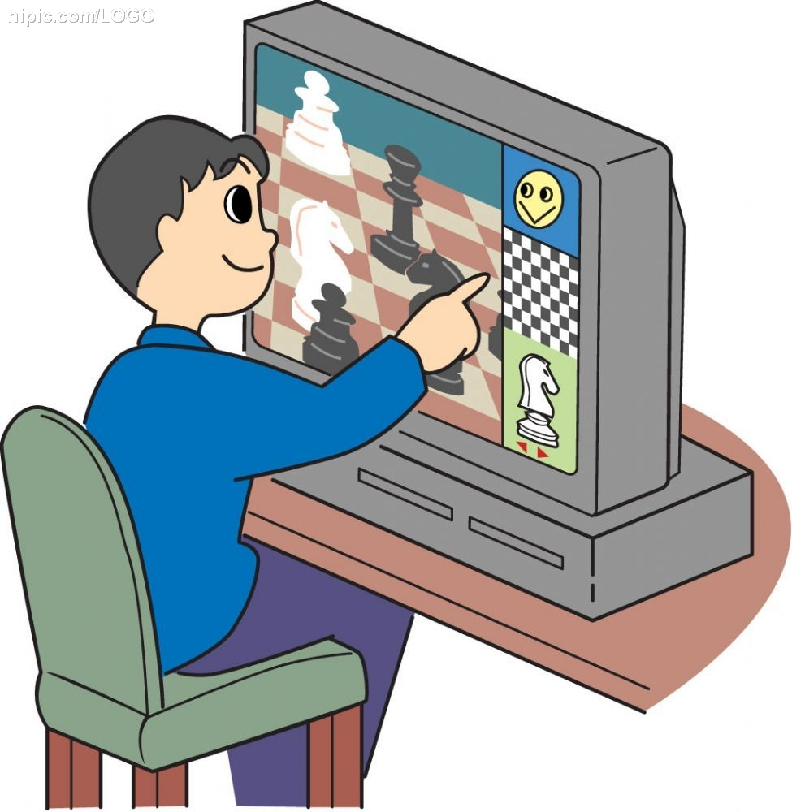
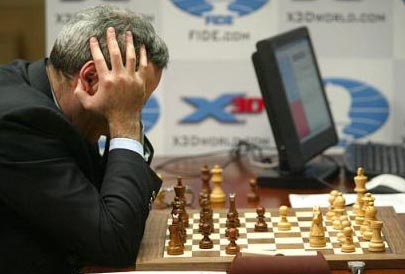

-
- Article
-
- 电脑的诱惑151515
- Writer[2014-06-28]Tag01Tag02Tag03Tag04Tag05
-
1997年5月7日是国际象棋界划时代的一天，IBM超级计算机“深蓝”在正常时限的比赛中首次以3.5:2.5的比分击败了棋坛巨无霸，前世界冠 军加里-卡斯帕罗夫，机器胜利标志着国际象棋历史的新时代，也引来了部分人的恐惧，害怕电脑最终会战胜人类，就如同一些科幻电影的桥段；而绝大多数人认为 这仅仅是一项科学实验，并期待电脑的发展可以协助人类解决很多现实的问题。
随着科学技术的不断进步，与电脑对抗不再是棋王的专利，文件很 小却计算能力超强的国际象棋引擎进驻万千国际象棋爱好者的电脑。无论是商业化的Houdini4，Rybka4，Fritz14；还是开源的 Stockfish5等引擎等级分评测均超过了3000分，远在当世棋王卡尔森的2872分之上。于是乎，借助电脑引擎分析研究局面成了提高水平的重要方 法之一，许多专业棋手都配备了“超级计算机”得以研究出更为“精确的走法”，以期在比赛中“抢占主动，先拔头筹”。国际象棋特级大师戴维斯曾在个人国际象 棋博客上登载一篇文章，标题为“阿南德谈电脑”。主要介绍了前世界冠军阿南德关于棋手与电脑的一些看法：
“电脑对于提高（国际象棋）水平有很大帮助。”
这句话是阿南德谈到特级大师如果没有助手和团队帮助他进行开局准备时说的，意思是说对于特级大师而言，作为替代办法，用电脑进行开局准备非常有效。
“开局分析令人难以置信的深入，以至于许多主变看起来都没法下了”。
阿南德这里指国际象棋引擎的开局分析非常精确，许多变化被“拆死”了，进入超级计算机时代，越来越多的国际象棋布局被淘汰。
诚然，电脑带给棋手们的帮助非常大，尤其是职业棋手，在自身已经奠定了扎实的基础和敏锐的战术棋感上，电脑拆棋的精确程度使他们更上一层楼。但现在国际象棋业余爱好者群体中，弥漫了“依赖电脑”的风气，就起到反作用了。
作 为上海国际象棋队主教练李祖年先生的助手，我有幸参与国际象棋教学工作，也算是尽心尽责，但我颇为后悔的一件事就是为俱乐部的小棋友们配备了国际象棋引 擎。我一直认为：传统的手工拆棋模式是很好提高水平的教学方式，小朋友们输了棋，教练有针对性地对他的错误所在进行指正并运用相关棋理分析，使得他们对自 身犯的错误有更清晰的认识，对局面有更深刻的理解。可是自从配备了国际象棋引擎之后，小朋友们草草听完教练的分析，迫不及待地守在电脑前，不停地按“空格 键”。在小朋友们的脑海中永远翻滚着的是电脑是最厉害的，我要看最精确的招法。“无情”的电脑显示了最精确的招法，小棋友们眉开眼笑，“我知道下次怎么对 付了！”每次训练班开课都有这样一幕幕发生，令我真是感慨万分。我本意是想给小棋友们配备更好的学习软件，帮助他们在原有基础上更进一步，却忽略了他们还 不够自律，玩起了“空中楼阁”，跳过原本真正涨棋的探究环节，直接得到了最精确的棋步，就像是猫选择了鱼儿丢掉了鱼竿，最终的结果呢，捡了芝麻，丢了西 瓜。
在前不久的一项赛事中，两位俱乐部中的小棋友对弈，其中一位棋友A用电脑精心准备，谁知道对手“不按常理出牌”，并没有选择电脑提供 的最佳招法。令人惊奇的是，A反而手足失措，理应占优的局面最终却一败涂地。问其原因，“老师，他没有走电脑最精确的走法，我不知道该怎样下了。”说的我 是目瞪口呆。虽然我们以前训练时没有电脑，属于摸瞎过河，但不断改进，不断深入，也走过弯路，在错误中不断领悟，不断积累。即使效率远不如现在电脑拆棋， 但对开局的次序理解，局面的判断等多方面都不是现在的小棋友们能够比拟的。棋友们不妨扪心自问：电脑拆棋除了告诉你最精确的招法，还做了什么？你知道了最 精确的一步，但你真的学会“下棋”了吗？
当代棋王卡尔森说过：“在我学棋的早期岁月里，我基本上没有用过电脑，也没有用过电脑棋库。当时，我只是简单地在自己面前摆一个棋盘，一边看书一边摆上棋谱，一招一式进行研究。头一次我用上电脑，那是为了在互联网上下国际象棋。那时我大概11岁或12
岁， 我还不知道什么叫‘CHESSBASE’。我知道，我这么说，有人会不相信。许多人把我看作是‘电脑国际象棋’的产物，但事实上并非如此。我甚至可以说， 我不会操作电脑，这让我早期的教练们感到非常惊讶。我什么都不会，无法在电脑上摆出我已下过的棋和我的分析。”令人难以至信的是卡尔森棋风突出之点，恰恰 在于任何一种局面，只要看上一眼，就知道如何防守，他的计算如同“丑陋的“机器一样精准。
当然，电脑还是很有帮助的，对局数据库查询，个人棋局库整理，引擎拆棋都是很好的资源。关键在于小朋友们要学会自律，学会真正探究局面，合理借助电脑。
64格的路在何方，不是滚烫的主机箱和呼次呼次的风扇声，而在你的脚下。
- 网站地图 ｜ 关于我们 ｜ 联系我们 ©2014 L&Y Chess 乐亿国际象棋 沪ICP备10001010号